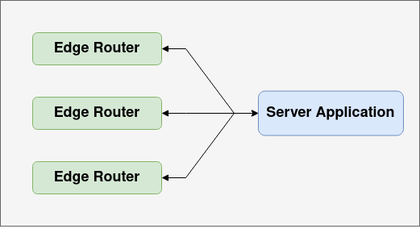
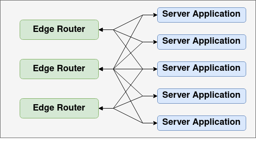

Ziti Services
The primary function of Ziti is providing access to "services". A service encapsulates the definition of any resource that could be accessed by a client on a traditional network.
A service is defined by the following components:
- Name - the name of the service
- Termination - Ziti only provides access to a network service, it does not provide the service itself. The service must be able to get network traffic to whatever application or application cluster is actually providing the service, whether that provider has Ziti embedded or has no knowledge of Ziti
- Configuration - Ziti allows application specific configuration to be stored for services
- Authorization - For a details on controlling access to services, see Policies.
Dark Services
One of the benefits of using a Ziti service is that the actual service can be 'dark'. In fact this is the default for any service based entirely in Ziti. Place the service in a secure network with only Ziti in place and nobody in the world can access the service without a valid certificate/identity!
Existing services can also be converted to dark via Ziti. Once Ziti is incorporated into an existing network and Ziti endpoints deployed the only access to these services can be through Ziti!
Service Name
Ziti services must have names that are unique to their Ziti installation. Service names are how clients address services in order to consume them. Services which are provided by applications with Ziti embedded also use the service name to indicate which service is being provided.
Services defined on a Ziti Network have an almost limitless "namespace" available for identifying services. A Ziti service is be defined by a name and this name is registered with the Ziti Controller. Once declared, services can then be addressed directly by name from Ziti-aware clients. This means there are effecitvely a limitless number names available with no need for global DNS registration. The names assigned are unique to a Ziti Network and the application developer has total control over service names.
Service Termination
In Ziti, service termination refers to how a network traffic going over Ziti reaches the application (or application cluster) which is actually providing a service. There are a few basic ways in which a service can be terminated at an application.
There are some trade-offs to consider for each type of termination.
- Do you want end-to-end zero trust? If yes, that requires that both the client and server have Ziti identities and can connect securely with provisioned certificates.
- Do you want Ziti provided end-to-end encryption? Developers can always provide their own end-to-end encryption on top of the connectivity that Ziti provides, but not all modes of service termination allow Ziti to encrypt traffic end-to-end for you.
- How accessible to non-zero-trust clients do you want your server application to be? With the proper configuration applications can be fully 'dark', meaning they do not listen for connections.
SDK Embedded Applications
The server application can embed the Ziti Edge SDK. The application will have an enrolled identity and provisioned certificates. This has several advantages:
- Connections between the application and Ziti will be secured using certificates. This enables true zero-trust and end-to-end encrypted connections betwen SDK based clients and SDK based servers.
- With an identity, the server application can particpate in the Ziti security model. This means you can control which services the application can provide, and revoke access as needed. You can also control which edge routers the application may connect to.
- The application will be 'dark'. Instead of listening for incoming network connections, the application will make an outgoing, secured connection to one or more Ziti edge routers. It will then receive network requests over these secured connections.
The downside to this approach, specifically for existing applications, is that the application must be refactored to use a Ziti Edge SDK. Depending on language and frameworks used, the effort required can range from updating a few lines of code to writing a new SDK from scratch for a language that's not supported yet.
Proxied Applications
For applications where it doesn't make sense to embed the SDK a Ziti SDK based proxy can provide access to the application. Often the proxy may take the form of a sidecar and be co-located with the application. This minimizes the attack surface. There are a few things to note about this approach.
- The application will not be completely dark. It must accept connections from wherever the proxy is located. The proxy may be co-located with the application, so the attack surface area may be tiny. However, tiny is still bigger than zero.
- Similarly, traffic can be encrypted between the client and the proxy, but traffic between the proxy and the application will not be covered under the Ziti end-to-end encryption. It may still be encrypted, if the client and server establish their own encryption at the discretion of the client and server implementors.
- Via the proxy, the application is still represented by an identity and thus participates in policies.
Services which uses proxes for server side termination may require extra configuration, so that the proxing application knows how to connect to the server application. Service configurations are discussed more below.
Ziti Router Terminated Services
Routers also have the ability to connect to applications providing services. This approach has its own advantages and disadvantages.
- Like the proxy approach, the application cannot be completely dark. The application must be reachable from the Ziti router.
- Ziti currently only offers end-to-end encryption between two SDK applications. Sessions terminating at a router cannot be end-to-end encrypted by Ziti. The data may still be end-to-end encrypted by the client and server, but that is up to the client and server implementors.
Summary
| Termination Type | End-to-end Zero Trust | Managed by Policies | Ziti Provided End-to-end encryption | Dark Server Application |
|---|---|---|---|---|
| SDK Embedded | Yes | Yes | Yes | Yes |
| SDK Based Proxy | No, only to proxy | Yes (via Proxy) | Only to proxy. If desired, full end-to-end must be done externally | No. Can be relatively locked down, though |
| Ziti Router | No | No | No. If desired, end-to-end must be done externally | No. Can be relatively locked down, though. |
Terminators
Terminators represent a way to connect to a specific server application for a specific service.
For SDK based server (whether embedded or proxied), these are created automatically as the application connects and removed when the application disconnects.
For router terminated services they must be created manually. When creating a terminator manually, the following must be specified.
- The router which will connect to the server application
- The binding. This indicates which Xgress component on the router will handle making the connection. This will generally be
transportfor tcp based applications andudpfor UDP based applications- See the ziti-fabric documentation for more information on the Xgress framework
- The address to connect to. This will be generally take the form
<protocol>:<host or ip>:<port>- Example:
tcp:localhost:5432
- Example:
Availability and Scaling
Services can be made highly available and/or horizontally scalable. There are two kinds of availability that server applications need to concern themselves with.
Router HA/Scaling
The first is allowing multiple routers to connect to a single application.

This ensures that the application will still be able to service requests even if a router fails or there is network partition separating a router and server application. It also will help ensure that the router layer doesn't become a bottleneck, as more routers can be addeded as necessary to scale out connectivity. Finally, it provides multiple network paths to the application. This gives smart routing more to choose optimal routes from as network conditions change.
Application HA/Scaling
The second is application availabilty and/or scalability. There will often be multiple instances of a service application running, either for failover or in a load balanced deployment.
A failover scenario might look like this:

A horizontal scaled application might look like this: 
Configuration
Creating a Service
Here's how you can create a service.
- On the left side nav bar, click "Edge Services"
- In the top right corner of the screen click the "plus" image to add a new service
- Choose a name for the serivce. Example "my-first-service"
- Enter a host name for the service. Enter "intercepted-hostname"
- Enter the port you want intercepted: 1111
- Choose Router by name - for example "ziti-gw01" if you are using Ziti Edge - Developer Edition
- For Endpoint Service choose:
- protocol = tcp
- host = actual-hostname
- port = 2222
- Select a cluster. If using Ziti Edge - Developer Edition choose "demo-c01"
- Leave Hosting Identities as is
- Click save